This vignette demonstrates integrating a split-sample scRNA-seq and CyTOF experiment (Su et al.). The purpose is to improve their individual annotations through a co-clustered annotation. To assimilate scRNA-seq data to CyTOF, we use our own implementation of Single-cell nearest-neighbor pseudobulking (scennep).
## Loading required package: SeuratObject## Loading required package: sp##
## Attaching package: 'SeuratObject'## The following objects are masked from 'package:base':
##
## intersect, t##
## Attaching package: 'anndata'## The following object is masked from 'package:SeuratObject':
##
## Layers##
## Attaching package: 'dplyr'## The following objects are masked from 'package:stats':
##
## filter, lag## The following objects are masked from 'package:base':
##
## intersect, setdiff, setequal, unionlibrary("ggplot2")
library("patchwork")
library("cyCombine")
library("cyDefine") # Available at https://github.com/biosurf/cyDefine##
## Attaching package: 'cyDefine'## The following object is masked from 'package:cyCombine':
##
## batch_correctWe got the download instructions from the article’s Data availability section. CyTOF is available on FlowRepository (FR-FCM-Z6ZN) and scRNA-seq data is available on SRA (SRR23497303). Getting the scRNA-seq metadata took some looking around, but direct download links are presented in the code chunks.
FlowRepositoryR might be depricated, so manual download can be required.
Run in bash.
cd ../../../data/pbmc/paired_cytometry_scrna/rnaseq
# SRA Normalized
#wget https://sra-pub-run-odp.s3.amazonaws.com/sra/SRR23497303/SRR23497303
# Raw bam file (used)
wget https://sra-pub-src-1.s3.amazonaws.com/SRR23497303/possorted_genome_bam.bam.1
mv possorted_genome_bam.bam.1 possorted_genome.bam
# Metadata
wget https://ftp.ncbi.nlm.nih.gov/geo/samples/GSM7048nnn/GSM7048570/suppl/GSM7048570%5Fpbmc%5Fseq.h5ad.gz
gunzip rnaseq/GSM7048570_pbmc_seq.h5ad.gz
rm rnaseq/GSM7048570_pbmc_seq.h5ad.gzBefore I found the preprocessed data from the article, I manually rerun the preprocessing steps. In the end, I used my own preprocessing, but used their filtering. There is commented out code for reusing their expression data, if you are redoing the analysis and want to keep it simple.
First, I convert the bam file to fastq in order to reanalyze with Cell Ranger.
module load cellranger/9.0.1
module load bamtofastq/1.3.0
# Get reference
wget "https://cf.10xgenomics.com/supp/cell-exp/refdata-gex-GRCh38-2024-A.tar.gz"
tar -zxvf refdata-gex-GRCh38-2024-A.tar.gz
# Bam to fastq
bamtofastq --nthreads 38 possorted_genome.bam fastq
mv fastq/ES-PBMC-2_HiSeq_MissingLibrary_1_HJK5NBCX2/* fastq/.
rm -rf fastq/ES-PBMC-2_HiSeq_MissingLibrary_1_HJK5NBCX
# Cell Ranger
cellranger count --transcriptome refdata-gex-GRCh38-2024-A --fastqs fastq --localcores 39 --localmem 110 --output-dir cr_out --id cr_paired_rna --create-bam=falseThen, I load the output into Seurat for preprocessing.
seu <- Seurat::Read10X("../../../data/pbmc/paired_cytometry_scrna/rnaseq/cr_out/outs/filtered_feature_bc_matrix")
seu <- CreateSeuratObject(counts = seu, project = "paired_rna", min.cells = 3, min.features = 200)
seu[["percent.mt"]] <- PercentageFeatureSet(seu, pattern = "^MT-")
# VlnPlot(seu, features = c("nFeature_RNA", "nCount_RNA", "percent.mt"), ncol = 3)(Commented out) I manually set the processing thresholds as follows:
# seu <- subset(seu, subset = nFeature_RNA > 250 & nFeature_RNA < 2800 & percent.mt < 5)
# VlnPlot(seu, features = c("nFeature_RNA", "nCount_RNA", "percent.mt"), ncol = 3)I reused the filtering and annotation from Su et al.
# Load anndata
adata <- read_h5ad("../../../data/pbmc/paired_cytometry_scrna/rnaseq/GSM7048570_pbmc_seq.h5ad")
#
# # Access the data
# count_matrix <- adata$X
# seu <- Seurat::CreateSeuratObject(t(adata$raw$X))
# seu <- seu[, adata$raw$obs_names %in% rownames(metadata)]
# count_matrix <- count_matrix[adata$raw$obs_names %in% rownames(metadata), ]
metadata <- adata$obs
# gene_info <- adata$var
seu <- seu[, colnames(seu) %in% rownames(metadata)]
# rna <- tibble::as_tibble(count_matrix) |>
# mutate(cell_id = rownames(count_matrix),
# celltype = metadata$celltype)
seu <- AddMetaData(seu, metadata)## Normalizing layer: counts## Finding variable features for layer counts## Centering and scaling data matrix## PC_ 1
## Positive: BCL11B, CD247, RORA, IL32, PPP1R16B, TRAC, TC2N, TNIK, RHOH, INPP4B
## CAMK4, LINC-PINT, ANK3, IL7R, PCED1B, BCL2, TRBC2, THEMIS, RPS12, RPS18
## LTB, PDE3B, LDHB, CD69, SYTL3, TTC39C, TRBC1, ZEB1, TAFA1, PATJ
## Negative: FCN1, PLXDC2, LYZ, IFI30, CST3, MNDA, LRMDA, SLC8A1, S100A9, AIF1
## CLEC7A, NAMPT, LST1, HCK, S100A8, ENSG00000257764, VCAN, CYBB, SPI1, DMXL2
## CLEC12A, CSTA, SLC11A1, RBM47, CSF3R, IRAK3, CTSS, SERPINA1, NCF2, TNFAIP2
## PC_ 2
## Positive: BANK1, IGHM, AFF3, FCRL1, LINC00926, CD79A, NIBAN3, COL19A1, IGHD, PAX5
## MS4A1, EBF1, GNG7, ADAM28, RALGPS2, CD79B, RUBCNL, CD22, ANGPTL1, BLK
## KHDRBS2, TCL1A, ADAM7-AS1, COBLL1, HLA-DQA1, BCL11A, OSBPL10, CDK14, LIX1-AS1, WDFY4
## Negative: S100A4, SRGN, CD247, TMSB4X, SYTL3, IL32, MYO1F, S100A6, RORA, AOAH
## ARHGAP26, NKG7, CCL5, TNIK, BCL11B, RAP1GAP2, ANXA1, TGFBR3, CTSW, GZMA
## SAMD3, CST7, ID2, PYHIN1, FNDC3B, GZMH, NEAT1, TRAC, HIVEP3, SLCO3A1
## PC_ 3
## Positive: NKG7, GNLY, GZMB, CST7, GZMA, FGFBP2, CCL5, AOAH, KLRD1, GZMH
## PRF1, MCTP2, C1orf21, ZEB2, KLRF1, CTSW, SPON2, RAP1GAP2, MYO1F, SYNE1
## HOPX, CCL4, LINC02384, FCRL6, PDGFD, PPP2R2B, NCALD, JAZF1, TTC38, VAV3
## Negative: PRKCA, CAMK4, SERINC5, LTB, LEF1, INPP4B, IL7R, RPL13, RCAN3, TSHZ2
## FHIT, RPS12, ANK3, MAL, NELL2, RPLP1, LDHB, RPS18, SESN3, ENSG00000249806
## MAML2, FAAH2, TESPA1, CCR7, PRKCQ-AS1, PAG1, BCL2, CSGALNACT1, PDE3B, PVT1
## PC_ 4
## Positive: HES4, ENSG00000287682, CDKN1C, FMNL2, CSF1R, LYPD2, FCGR3A, CCDC26, MS4A7, TBC1D8
## PAPSS2, TCF7L2, CTSL, IFITM3, BATF3, MS4A4A, CKB, LINC02345, KCNMA1, UICLM
## SPRED1, SIGLEC10, RHOC, HMOX1, NEURL1, VMO1, ICAM4, TNFRSF8, SCRN1, PELATON
## Negative: S100A12, VCAN, ENSG00000257764, CD36, S100A8, FCAR, CD14, CSF3R, MS4A6A, CREB5
## DYSF, AQP9, CXCL8, ENSG00000287979, CLEC4E, MGST1, LUCAT1, ACSL1, ANPEP, PLBD1
## CYP1B1, TEX14, THBS1, TREM1, CCDC200, ENSG00000289150, ENSG00000276216, NLRP12, S100A9, LINC00937
## PC_ 5
## Positive: RPS18, RPL13, RPS12, RPLP1, LINC-PINT, DPYD, JUNB, CD44, PPP1R16B, S100A6
## S100A4, RNF149, RORA, CRIP1, IL32, ARHGAP26, NEAT1, S100A10, NFKB1, ADGRE5
## FBXW7, NIBAN1, MYO1F, TNFAIP3, PICALM, SYTL3, CDC14A, JUN, GPCPD1, ANXA1
## Negative: PPBP, CAVIN2, PF4, GNG11, TUBB1, GP1BB, CMTM5, ITGA2B, ITGB3, NRGN
## H2AC6, CTTN, ENSG00000288882, SPARC, GP9, TREML1, ACRBP, CLU, MPIG6B, CD9
## SNCA, RGS18, BEX3, ENSG00000289621, MYL9, PRKAR2B, PGRMC1, TPM1, SH3BGRL2, MYLK## Computing nearest neighbor graph## Computing SNNseu <- FindClusters(seu, algorithm = 4, random.seed = seed)
# UMAP
seu <- RunUMAP(seu, dims = 1:10, seed.use = seed)## Warning: The default method for RunUMAP has changed from calling Python UMAP via reticulate to the R-native UWOT using the cosine metric
## To use Python UMAP via reticulate, set umap.method to 'umap-learn' and metric to 'correlation'
## This message will be shown once per session## 07:24:01 UMAP embedding parameters a = 0.9922 b = 1.112## 07:24:01 Read 2651 rows and found 10 numeric columns## 07:24:01 Using Annoy for neighbor search, n_neighbors = 30## 07:24:01 Building Annoy index with metric = cosine, n_trees = 50## 0% 10 20 30 40 50 60 70 80 90 100%## [----|----|----|----|----|----|----|----|----|----|## **************************************************|
## 07:24:01 Writing NN index file to temp file /var/folders/q4/05k1bf1x3jq6p6pm_5f1xnw40000gp/T//RtmphVsza7/file571e6db9c295
## 07:24:01 Searching Annoy index using 1 thread, search_k = 3000
## 07:24:01 Annoy recall = 100%
## 07:24:01 Commencing smooth kNN distance calibration using 1 thread with target n_neighbors = 30
## 07:24:02 Initializing from normalized Laplacian + noise (using RSpectra)
## 07:24:02 Commencing optimization for 500 epochs, with 104764 positive edges
## 07:24:02 Using rng type: pcg
## 07:24:05 Optimization finished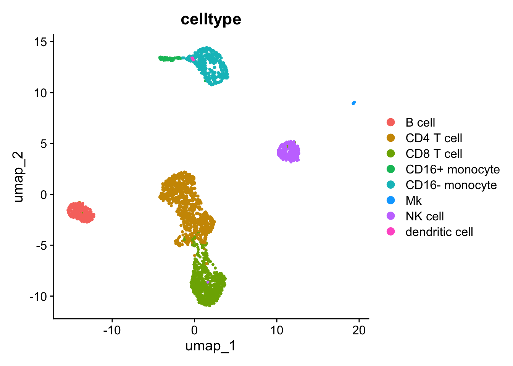
Load FCS files into R and clean marker names.
data_dir <- "../../../data/pbmc/paired_cytometry_scrna/FR-FCM-Z6ZN/"
cytof_fs <- cyCombine::compile_fcs(data_dir, pattern = "analyze_normalized")## Reading 1 files to a flowSet..cytof_fs[[1]] |> flowCore::parameters() |> Biobase::pData() |>
dplyr::filter(stringr::str_detect(desc, "_"),
stringr::str_detect(desc, "BC", negate = T)) |>
pull("desc") ## $P2S $P3S $P12S
## "Event_length" "89Y_CD45" "115In_CD44"
## $P20S $P21S $P23S
## "141Pr_CD11b" "142Nd_CD79b" "144Nd_CD19"
## $P24S $P25S $P26S
## "145Nd_CD11c" "146Nd_IgD" "147Sm_CD68"
## $P27S $P28S $P29S
## "148Nd_CD16" "149Sm_CD25" "150Nd_CD43"
## $P30S $P32S $P34S
## "151Eu_CD103" "153Eu_CD45RA" "155Gd_CD27"
## $P35S $P36S $P37S
## "156Gd_CD86" "157Gd_Nucleoporins" "158Gd_CD33"
## $P39S $P40S $P41S
## "160Gd_CD14" "161Dy_Tbet" "162Dy_FoxP3"
## $P43S $P44S $P45S
## "164Dy_CD161" "165Ho_CD8a" "166Er_CD49a"
## $P47S $P48S $P49S
## "168Er_CD69" "169Tm_CD4" "170Er_CD3"
## $P50S $P51S $P52S
## "171Yb_CD20" "172Yb_CD38" "173Yb_CD45RO"
## $P53S $P54S $P55S
## "174Yb_HLADR" "175Lu_Perforin" "176Yb_CD56"
## $P57S $P58S $P59S
## "191Ir_Intercalator" "193Ir_Intercalator" "194Pt_Cisplatin"
## $P60S $P61S
## "195Pt_Cisplatin" "198Pt_Cisplatin"## Converting flowset to data frame## Extracting expression data..## Your flowset is now converted into a dataframe.## Transforming data using asinh with a cofactor of 5..## Done!colnames(cytof) <- colnames(cytof) |>
stringr::str_remove_all("^\\d+[A-Za-z]+_?")
cytof <- cytof[, stringr::str_detect(colnames(cytof), "^(CD|Fox|Tbet|id|sample|IgD|HLA)")]
markers <- cyCombine::get_markers(cytof)I could not extract the annotation used in Su et al., so I manually annotated using more or less the same approach as they do.
cytof$label <- create_som(
cytof, seed = 334, cluster_method = "flowsom", xdim = 6, ydim = 6, nClus = 18)
umap_cytof <- cytof |>
plot_umap(markers = markers, col = "label", seed = 334, return_data = TRUE, down_sample = T, sample_n = 30000, title = "CyTOF UMAP")## Generating UMAP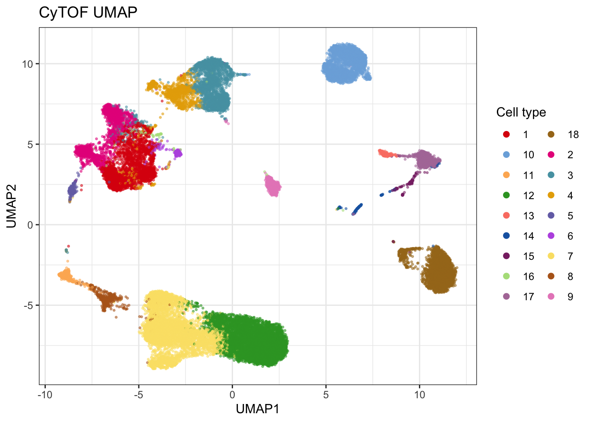
# plot_embedding(umap_cytof$data, col = "CD4", title = "CyTOF CD4")
plot_markers(umap_cytof$data, markers = c("CD14", "CD16", "CD68", "HLADR", "CD3", "CD4", "CD8a", "CD19", "CD20", "CD56", "CD38"), show_legend = F)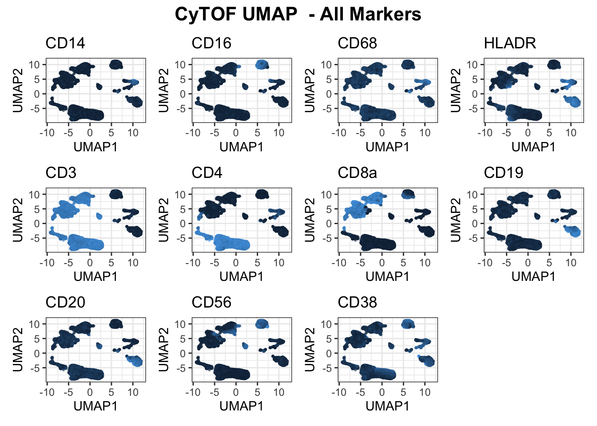
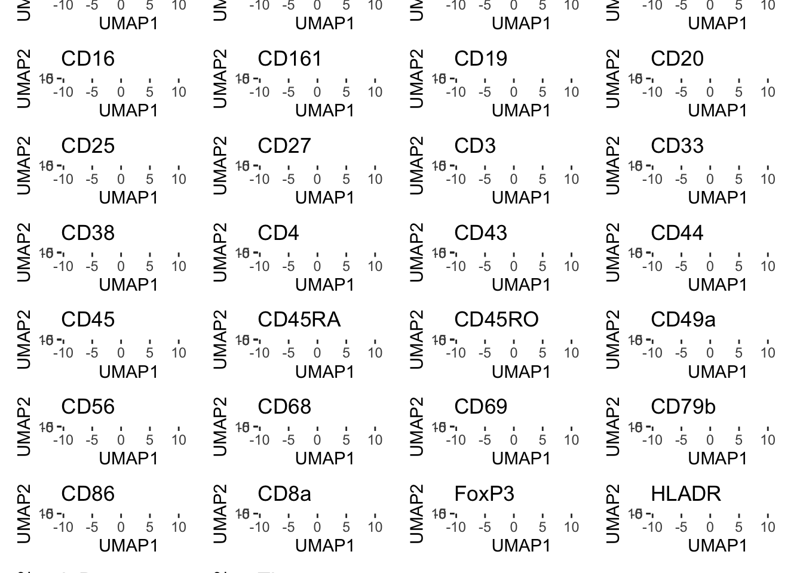
## Visualizing expression of predicted cell types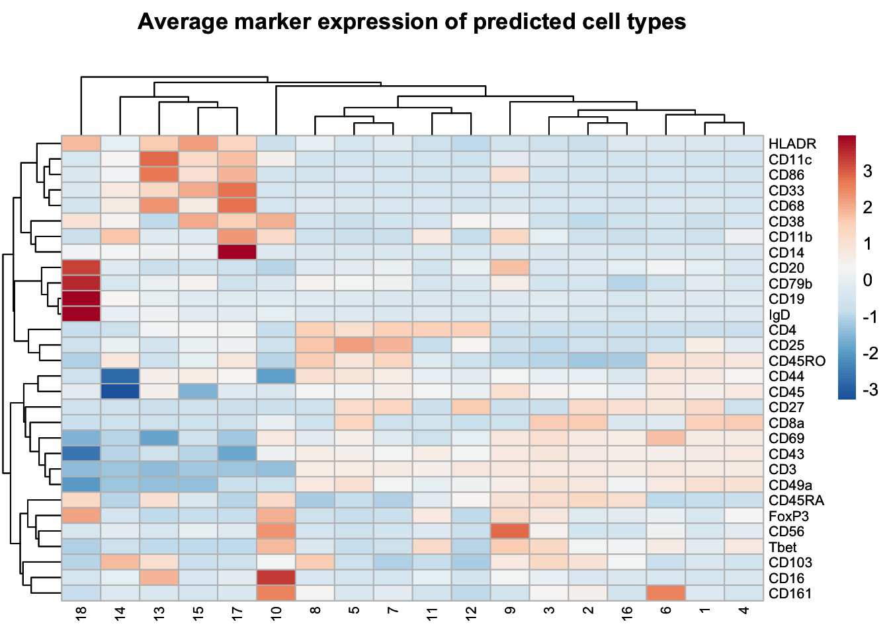
| Cell Type | Markers |
|---|---|
| CD4 T cells | CD3+, CD4+ |
| CD8 T cells | CD3+, CD8a+ |
| B cells | CD19+, CD20+, CD79b+, HLADR+ |
| NK cells | CD56+ |
| NKT cells | CD56+, CD3+ |
| CD16- monocytes | CD14+, CD16- |
| CD16+ monocytes | CD16+ |
| DCs | HLADR+, CD68+ |
| DN T cells | CD3+, CD4-, CD8a- |
| DP T cells | CD3+, CD4+, CD8a+ |
annotation <- c(
"1" = "CD8 T cell",
"2" = "CD8 T cell",
"3" = "CD8 T cell",
"4" = "CD8 T cell",
"5" = "DP T cell",
"6" = "DN T cell",
"7" = "CD4 T cell",
"8" = "CD4 T cell",
"9" = "NKT cell",
"10" = "NK cell",
"11" = "CD4 T cell",
"12" = "CD4 T cell",
"13" = "dendritic cell",
"14" = "unassigned",
"15" = "dendritic cell",
"16" = "DN T cell",
"17" = "CD16- monocyte",
"18" = "B cell")
cytof <- cytof |>
mutate(label = stringr::str_remove_all(label, "cluster_"),
batch = "CyTOF",
celltype = annotation[label])
umap_cytof$data$celltype <- annotation[stringr::str_remove_all(umap_cytof$data$label, "cluster_")]
unique_cells <- c(as.character(seu$celltype), cytof$celltype) |> unique() |> sort()
celltype_colors <- cyDefine::get_distinct_colors(unique_cells)
celltype_colors["dendritic cell"] <- "#AA0A0A"
plot_cytof_exprs <- plot_embedding(umap_cytof$data, col = "celltype", title = "CyTOF", colors = celltype_colors, legend_title = "Cell type")
plot_cytof_exprs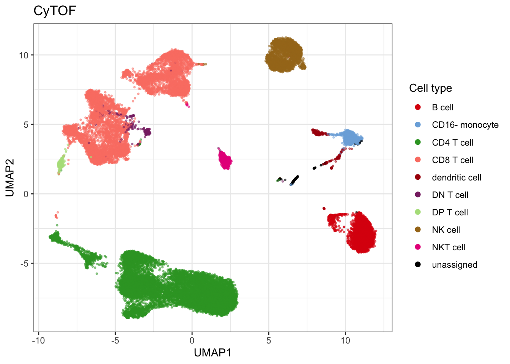
I convert protein names to gene names to find the common features between the two datasets.
protein_gene <- data.frame(
Protein = c("CD45", "CD11b", "CD79b", "CD11c", "IgD", "CD16", "CD25", "CD43", "CD103", "CD45RA",
"Tbet", "FoxP3", "CD161", "CD8a", "CD49a", "CD3", "CD20", "CD45RO", "HLADR", "CD56"),
Gene_Symbol = c("PTPRC", "ITGAM", "CD79B", "ITGAX", "IGHD", "FCGR3A", "IL2RA", "SPN", "ITGAE",
"PTPRC", "TBX21", "FOXP3", "KLRB1", "CD8A", "ITGA1", "CD3E", "MS4A1", "PTPRC",
"HLA-DRA", "NCAM1")
)
if ("CD45RO" %in% colnames(cytof)) {
cd45 <- pmax(cytof$CD45, cytof$CD45RA, cytof$CD45RO)
cytof <- cytof |>
select(-starts_with("CD45")) |>
mutate(CD45 = cd45)
markers <- get_markers(cytof)
}
genes_to_rename <- rownames(seu)[rownames(seu) %in% protein_gene$Gene_Symbol]
rownames(seu)[rownames(seu) %in% genes_to_rename] <- protein_gene$Protein[match(genes_to_rename, protein_gene$Gene_Symbol)]Here is the UMAP when only using those common features.
umap_rna_exprs <- seu@assays$RNA$data[markers, ] |>
t() |>
as.data.frame() |>
mutate(celltype = seu$celltype) |>
plot_umap(ref_col = "celltype",
seed = 334,
metric = "cosine",
return_data = TRUE,
title = "scRNA-seq raw",
colors = celltype_colors)## Generating UMAP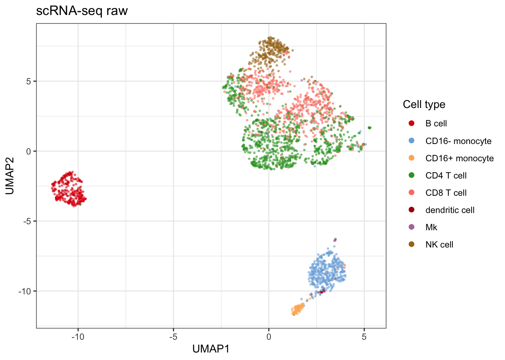
I run single-cell nearest-neighbor pseudobulking (scennep) using cosine distance. The umap demonstrates the impact of running scennep on the data.
## Run scennep
library(scennep)
rna <- scennep(
seu,
markers = markers,
mc.cores = 4,
distance = "cosine",
return_S4 = FALSE
)## Using the top 31 pcs for the SNN## Building SNN graph with k = 20## Pseudobulking each cell with its 20 nearest neighborsrna <- as.data.frame(t(rna))
rna$batch <- "RNA"
rna$sample <- "RNA"
rna$celltype <- seu$celltype
umap_rna <- rna |>
plot_umap(markers = markers,
col = "celltype",
legend_title = "Cell type",
title = "scRNA-seq scennep",
colors = celltype_colors,
seed = 334,
return_data = TRUE,
metric = "cosine")## Generating UMAPplot_rna_scennep <- umap_rna$plot
# plot_embedding(umap_cytof$data, col = "CD4", title = "CyTOF CD4")
# plot_markers(umap_rna$data, markers = markers, show_legend = F)
plot_cytof_exprs + plot_rna_exprs + plot_rna_scennep + patchwork::plot_layout(
guides = "collect",
design = "
#11#
2233
")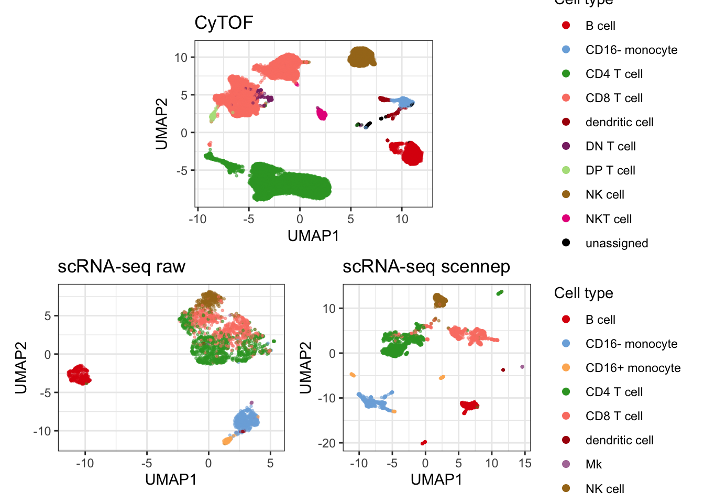
I want to compare the integration with and without scennep, so I merge and correct both variants of the data using the same parameters.
# Extract expressions
exprs <- seu@assays$RNA$data
exprs <- as.data.frame(t(exprs))
exprs$batch <- "RNA"
exprs$sample <- "RNA"
exprs$celltype <- seu$celltype
# Merge datasets
set.seed(seed)
uncorrected_exprs <- exprs |>
#
dplyr::select(dplyr::any_of(c(markers, non_markers))) |>
dplyr::bind_rows(cytof |>
# dplyr::slice_sample(n = n_cells*3) |>
dplyr::select(dplyr::any_of(c(markers, non_markers)))) |>
dplyr::mutate(id = dplyr::row_number())
# saveRDS(uncorrected, "results/05_cytof_rnaseq_uncorrected.rds")system.time({
suppressMessages({ # Hide per-cluster correction info
corrected_exprs <- cyCombine(
uncorrected_exprs,
markers = markers,
norm_method = "scale",
cluster_method = "flowsom",
distf = "cosine",
seed = seed,
xdim = c(1, 5),
ydim = c(1, 5),
mc.cores = 4,
method = "ComBat"
)
})
})
# saveRDS(corrected, "results/05_cytof_rnaseq_corrected.rds")# Merge datasets
set.seed(seed)
uncorrected <- rna |>
dplyr::select(dplyr::any_of(c(markers, non_markers))) |>
dplyr::bind_rows(cytof |>
dplyr::select(dplyr::any_of(c(markers, non_markers)))) |>
dplyr::mutate(id = dplyr::row_number())
# saveRDS(uncorrected, "results/05_cytof_rnaseq_uncorrected.rds")set.seed(seed)
uncor_batch <- uncorrected |>
dplyr::group_by(sample) |>
dplyr::slice_sample(n = nrow(rna)) |>
plot_umap(
down_sample = F,
title = "Uncorrected",
legend_title = "Technology",
metric = "cosine",
markers = markers,
col = "batch")## Generating UMAP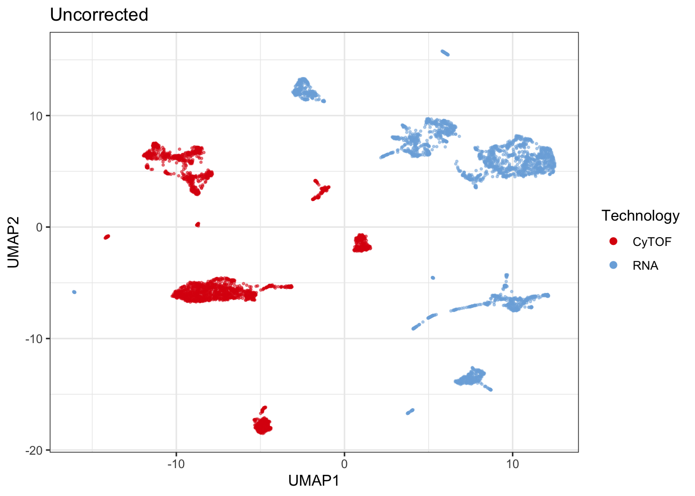
system.time({
suppressMessages({ # Hide per-cluster correction info
corrected <- cyCombine(
uncorrected,
markers = markers,
norm_method = "scale",
cluster_method = "flowsom",
distf = "cosine",
# ref.batch = "CyTOF",
seed = seed,
xdim = c(1, 5),
ydim = c(1, 5),
mc.cores = 4,
method = "ComBat"
)
})
})
# saveRDS(corrected, "results/05_cytof_rnaseq_corrected.rds")set.seed(seed)
plot_batch <- corrected |>
dplyr::group_by(sample) |>
dplyr::slice_sample(n = 10000) |>
plot_umap(
down_sample = F,
# markers = markers,
title = "CyTOF + scRNA-seq",
return_data = T,
metric = "cosine",
legend_title = "Technology",
col = "batch")## Generating UMAP# ggplot2::ggsave(plot_batch$plot, filename = "figs/05_cytof_rnaseq_batch.png")
# saveRDS(plot_batch$plot, "results/05_cytof_rnaseq_batch.rds")
plot_batch$plot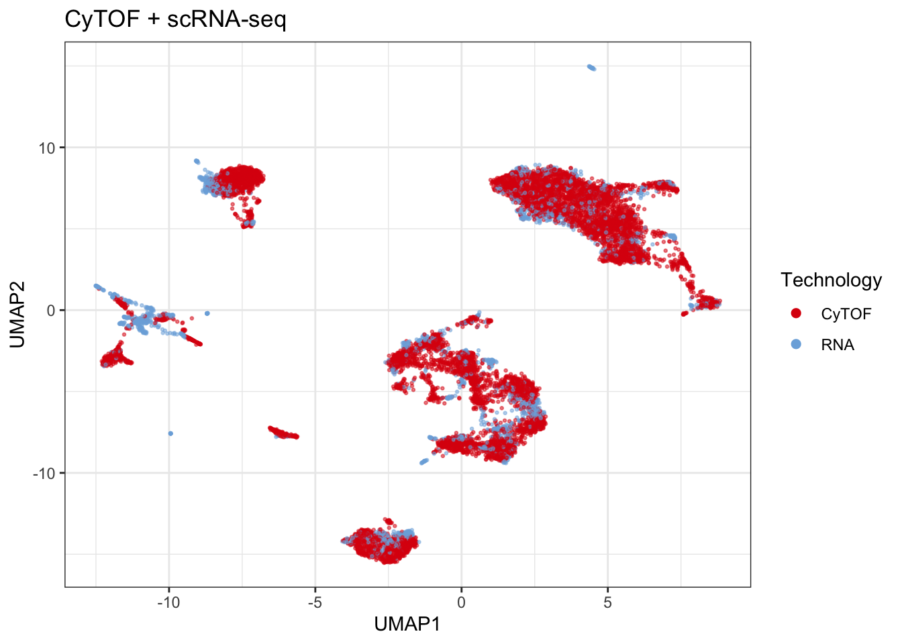
Here, I reuse the umap generated above to plot celltype labels on the two modalities side by side.
xlim <- c(min(plot_batch$data$UMAP1), max(plot_batch$data$UMAP1))
ylim <- c(min(plot_batch$data$UMAP2), max(plot_batch$data$UMAP2))
plot_cell <-
plot_embedding(
dplyr::filter(plot_batch$data, batch == "CyTOF"),
colors = celltype_colors,
xlim = xlim,
ylim = ylim,
title = "Integrated CyTOF",
col = "celltype",
legend_title = "Cell type") +
plot_embedding(
dplyr::filter(plot_batch$data, batch == "RNA"),
colors = celltype_colors,
xlim = xlim,
ylim = ylim,
title = "Integrated scRNA-seq scennep",
col = "celltype",
legend_title = "Cell type") +
patchwork::plot_layout(
axes = "collect",
axis_titles = "collect")
plot_cell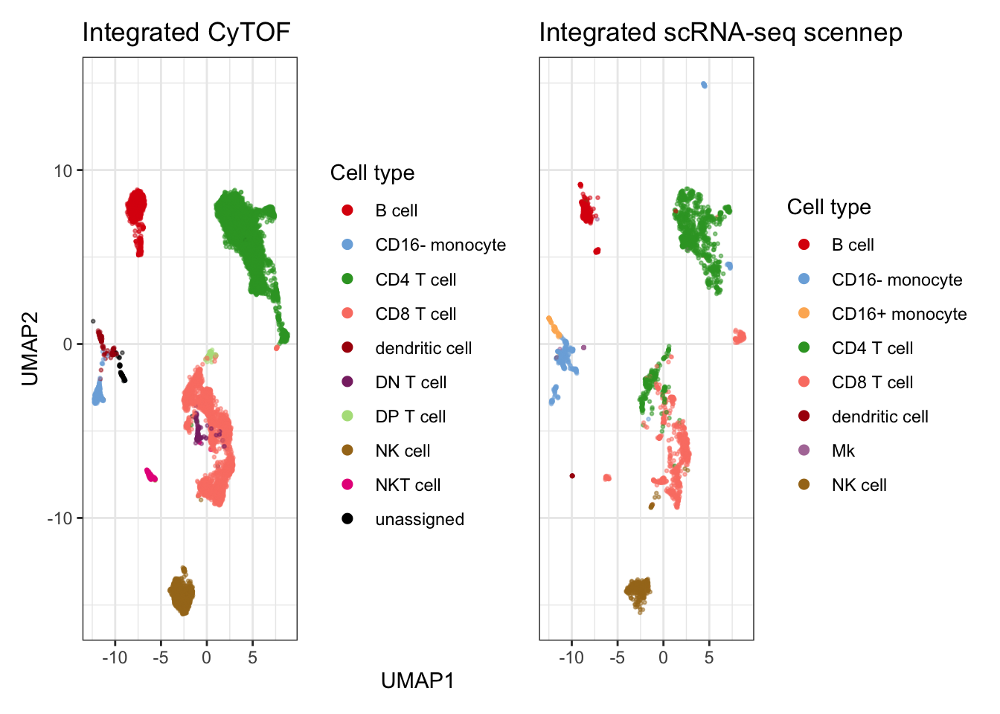
# saveRDS(plot_cell, "results/05_cytof_rnaseq_cell.rds")
# ggplot2::ggsave(plot_cell, filename = "figs/05_cytof_rnaseq_cell.png")And here is a side-by-side comparison of the raw and integrated data with and without scennep.
set.seed(seed)
plot_cell_exprs <- cyDefine::plot_umap(
corrected_exprs |> dplyr::filter(batch == "CyTOF"),
corrected_exprs |> dplyr::filter(batch == "RNA"),
down_sample = T,
# min_dist = 0.2,
colors = celltype_colors,
sample_n = nrow(rna),
title = c("CyTOF", "Integrated scRNA-seq raw"),
markers = markers,
metric = "cosine",
col = "celltype")## Generating UMAP## Computing UMAP embedding of all cells of reference and query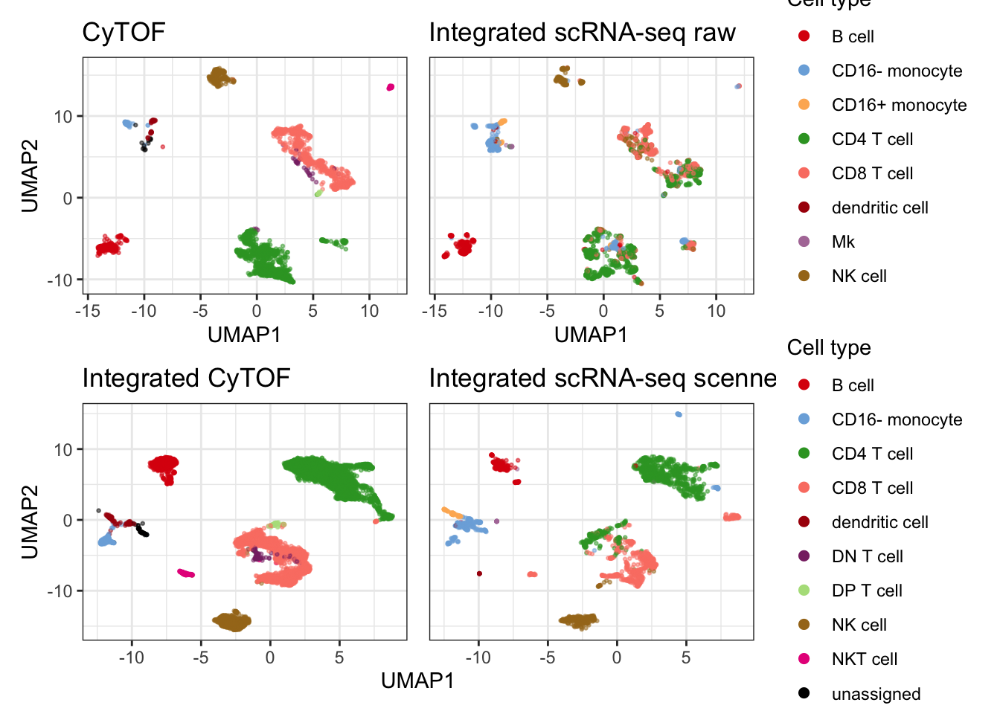
# plot_corrected_exprs_cytof + plot_corrected_cytof
umap_integration <- plot_cytof_exprs +
plot_rna_exprs +
plot_rna_scennep +
plot_cell_exprs[[2]] +
plot_cell[[2]] +
plot_cell[[1]] +
patchwork::plot_layout(
guides = "collect",
design = "
2244
3355
1166
")
umap_integration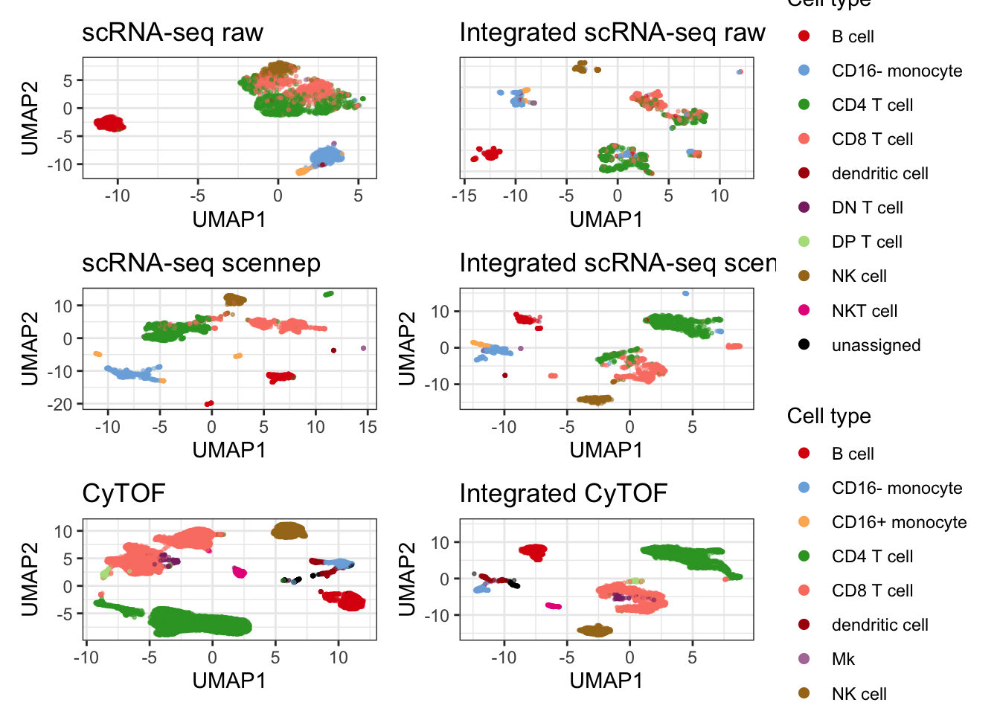
Here, we aim to improve the annotation of the individual datasets by co-clustering and annotating them jointly. Depending on the seed, a few subclusterings are necessary to separate the DC and monocyte populations.
set.seed(seed)
corrected$label <- create_som(
corrected, seed = seed, distf = "cosine", cluster_method = "flowsom", xdim = 6, ydim = 6, nClus = 18) |>
as.character()
plot_batch$data$label <- NULL
umap_combined <- plot_batch$data |>
left_join(corrected[, c("id", "label")], by = "id")
plot_embedding(umap_combined, col = "label", title = "Co-cluster labels")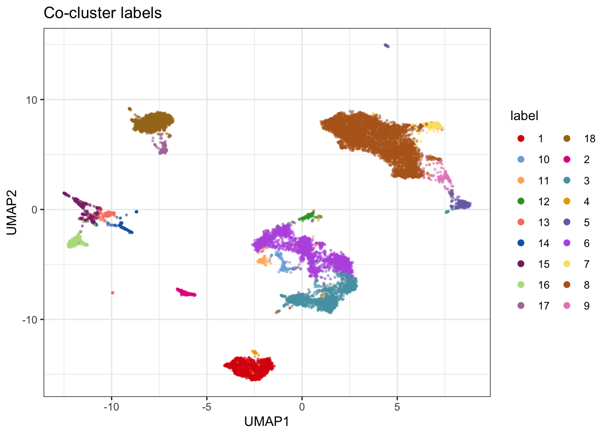
lab13 <- paste0("13.", create_som(
corrected[corrected$label == "13", markers], seed = seed, distf = "cosine", cluster_method = "flowsom", xdim = 1, ydim = 2))## Building SOM## Mapping data to SOMcorrected$label[corrected$label == "13"] <- lab13
lab14 <- paste0("14.", create_som(
corrected[corrected$label == "14", markers], seed = seed, distf = "cosine", cluster_method = "flowsom", xdim = 1, ydim = 2))## Building SOM
##
## Mapping data to SOMcorrected$label[corrected$label == "14"] <- lab14
lab15 <- paste0("15.", create_som(
corrected[corrected$label == 15, markers], seed = seed, xdim = 1, ydim = 3))## Creating SOM grid..corrected$label[corrected$label == "15"] <- lab15
umap_combined <- plot_batch$data |>
left_join(corrected[, c("id", "label")], by = "id")
plot_embedding(umap_combined, col = "label", title = "Co-cluster labels")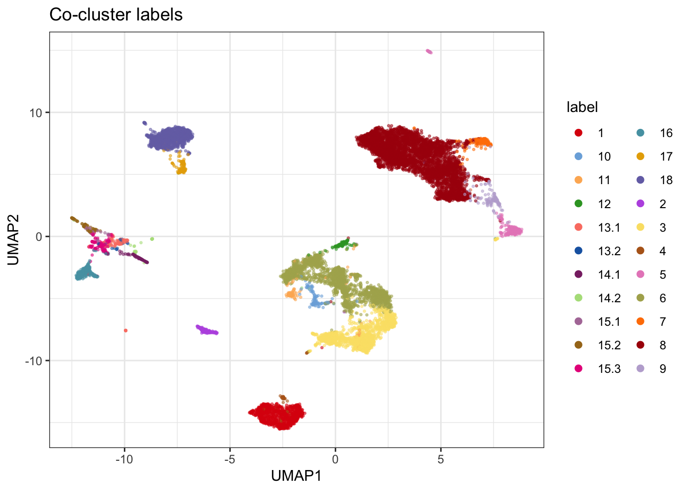
# ggsave(plot_embedding(umap_combined, col = "label", title = "Co-cluster labels"),
# file = "figs/05_cocluster_labels.png")annotation <- c(
"1" = "NK cell",
"2" = "NKT cell",
"3" = "CD8 T cell",
"4" = "NK cell",
"5" = "CD4 T cell",
"6" = "CD8 T cell",
"7" = "CD4 T cell",
"8" = "CD4 T cell",
"9" = "CD4 T cell",
"10" = "DN T cell",
"11" = "CD8 T cell",
"12" = "DP T cell",
"13.1" = "dendritic cell",
"13.2" = "CD16- monocyte",
"14.1" = "CD16- monocyte",
"14.2" = "Mk",
"15.1" = "dendritic cell",
"15.2" = "CD16+ monocyte",
"15.3" = "CD16- monocyte",
"16" = "CD16- monocyte",
"17" = "B cell",
"18" = "B cell")
corrected <- corrected |>
mutate(celltype_cocluster = annotation[label])
umap_combined$celltype_cocluster <- annotation[umap_combined$label]
plot_embedding(umap_combined, col = "celltype_cocluster", title = "CyTOF UMAP")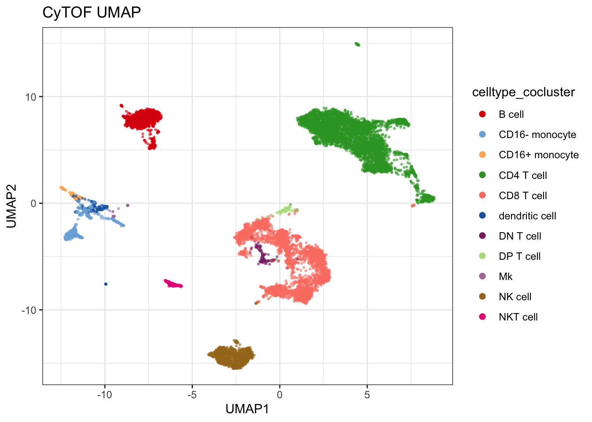
p_cocluster_annotation <- (plot_embedding(umap_combined, col = "label", title = "Co-cluster labels") + theme(legend.position = "none")) +
(plot_embedding(umap_combined, col = "celltype_cocluster", colors = celltype_colors, title = "Co-cluster annotation", legend_title = "Cell type") +
theme(legend.position = "bottom", legend.direction = "horizontal", legend.justification = "left") + guides(
color = guide_legend(title = "Cell type",
nrow = 2,
override.aes = list(size = 4, alpha = 1)
))) +
(plot_embedding(umap_combined, col = "celltype", colors = celltype_colors, title = "Independent Annotation") + theme(legend.position = "none"))
p_cocluster_annotation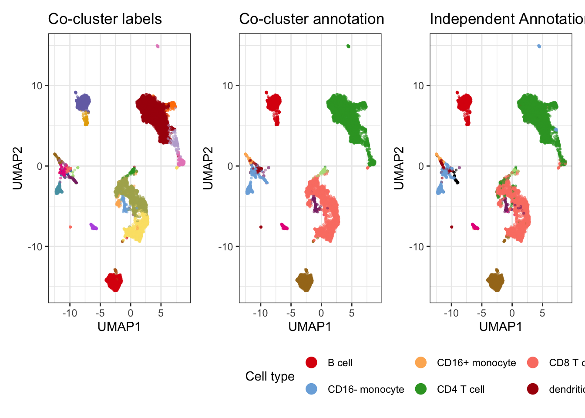
# ggsave(p_cocluster_annotation, filename = "figs/05_cocluster_annotation.png", height = 15, width = 30, units = "cm")library(ggplot2)
library(dplyr)
library(tidyr)
library(patchwork)
corrected$celltype <- as.character(corrected$celltype)
corrected$celltype_cocluster <- as.character(corrected$celltype_cocluster)
p_abundance_co <- plot_abundance_comparison(
corrected |> dplyr::filter(batch == "CyTOF"),
corrected |> dplyr::filter(batch == "RNA"),
CLR = T,
ref_name = "CyTOF", query_name = "scRNA-seq",
ref_col = "celltype_cocluster", query_col = "celltype_cocluster") + ggtitle("Co-clustered")
p_abundance <- plot_abundance_comparison(
corrected |> dplyr::filter(batch == "CyTOF"),
corrected |> dplyr::filter(batch == "RNA"),
CLR = T,
ref_name = "CyTOF", query_name = "scRNA-seq",
ref_col = "celltype", query_col = "celltype") +
ggtitle("Independently")
p_abundances <- (p_abundance + theme(legend.position = "none")) / p_abundance_co
p_abundances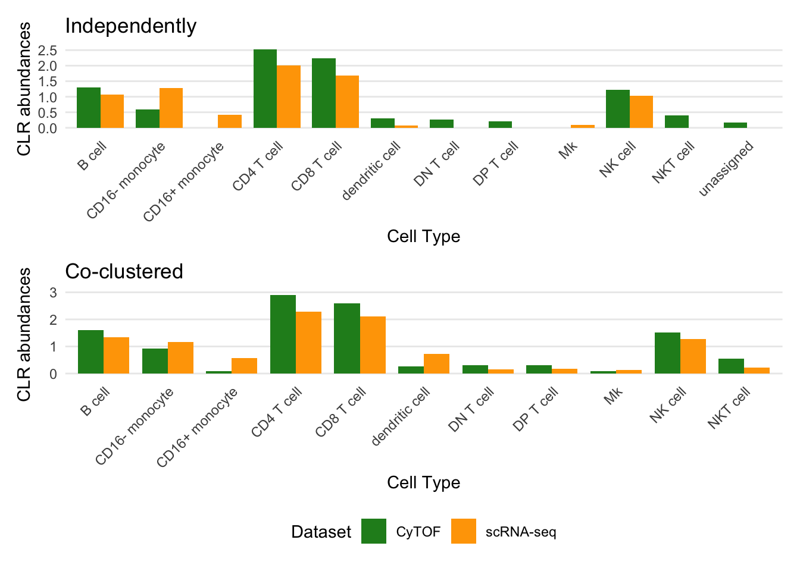
# saveRDS(p_abundances, "results/05_cytof_rnaseq_abundance.rds")
# ggplot2::ggsave(p_abundances, filename = "figs/05_cytof_rnaseq_abundance.png")
Fig4 <- p_cocluster_annotation / (p_abundance + p_abundance_co + patchwork::plot_layout(guides = "collect") & theme(legend.position = "bottom")) +
patchwork::plot_layout(
design = "
1111111111
2222222222
") +
plot_annotation(tag_levels = "A")
Fig4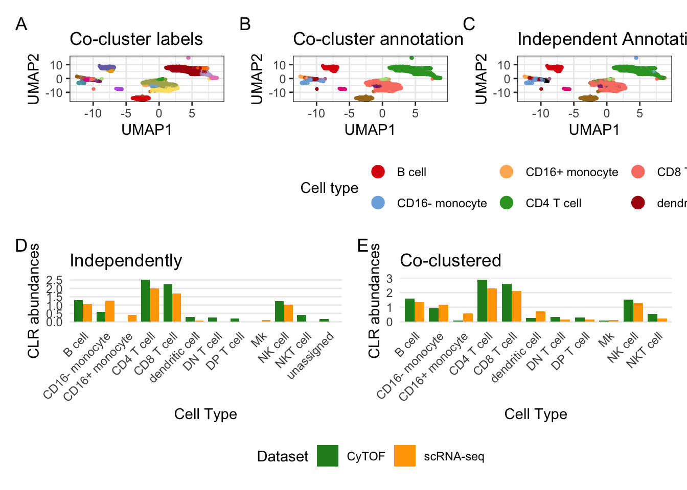
Contact